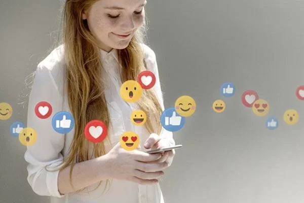

Cada vez mais, os consumidores estão buscando a opinião de influenciadores antes de se relacionar com marcas e produtos. E não buscam apenas opinião, mas vivência e as novas experiências que estes influenciadores estão tendo com as marcas. A Agência Contatto possui estratégia de relacionamento com influenciadores e pode ajudar sua marca a se relacionar com figuras públicas expressivas nas redes sociais. Confira abaixo o que podemos fazer para ajudar sua marca neste universo.